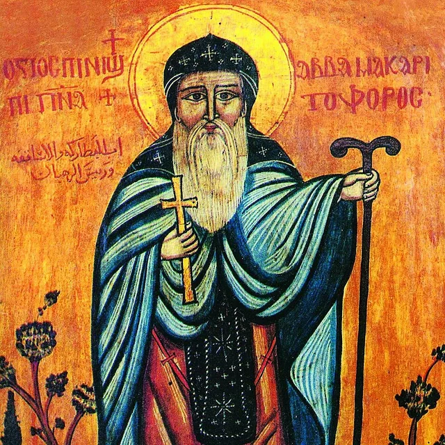
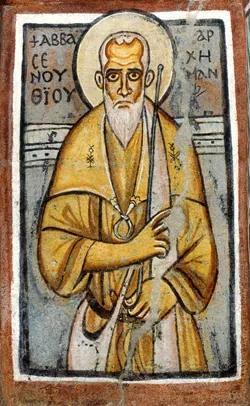
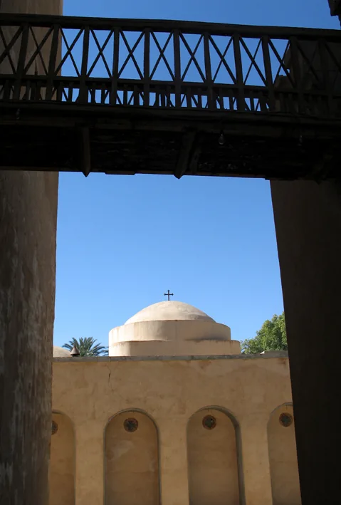
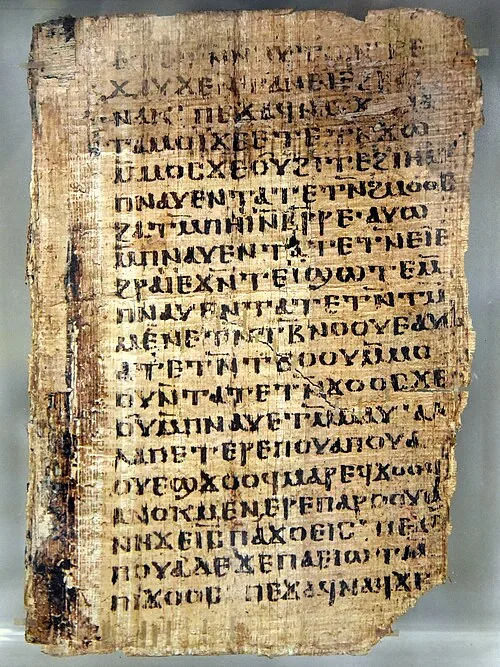

01 · AN INTRODUCTION
Who Are the Church Fathers?
The Church Fathers are influential Christian bishops, theologians, monks, teachers, and spiritual writers whose lives and teachings helped preserve and explain the apostolic faith.
Their writings illuminate how early Christians understood Holy Scripture, worship, the Holy Trinity, the Incarnation, salvation, prayer, and the spiritual life. The Coptic Orthodox Church especially treasures the Alexandrian theological tradition and the Egyptian monastic heritage.
Scripture at the Heart
The Fathers are not a replacement for Holy Scripture. Rather, their teachings are studied within the living Holy Tradition of the Church, with Scripture at its heart.
Explore Holy ScriptureWhy Study the Fathers?
Apostolic Continuity
Their writings help us understand how the Christian faith was transmitted and explained across generations.
Understanding Scripture
Their sermons and commentaries illuminate the biblical text.
Defending the Faith
Many Fathers responded to controversies concerning the Trinity, Christ, and salvation.
Growing in Holiness
Their spiritual writings teach repentance, prayer, humility, and love.
For a Coptic introduction to this living tradition, explore the Southern Diocese's patrology resources .
02 · THE DIRECTORY
Explore the Church Fathers
Meet teachers from across the early Christian world, then continue into their biographies and writings. Dates are approximate; traditions and scholarly chronologies may differ.
21 profiles across six traditions
Apostolic Fathers
St. Clement of Rome
Late first century
Rome
Unity and reconciliation in the apostolic Church
St. Clement is traditionally associated with the early leadership of the Church of Rome. His First Epistle to the Corinthians addresses division within the Christian community and calls Christians to humility, peace, obedience, and the restoration of order within the Church.
Key writings & sources: First Epistle to the Corinthians.
Explore the biographyApostolic Fathers
St. Ignatius of Antioch
Late first to early second century
Antioch, Syria
Church unity, the Eucharist, and faithful witness
An early bishop of Antioch, St. Ignatius wrote to Christian communities while traveling toward his martyrdom. His letters emphasize unity around the bishop, the reality of Christ's Incarnation, the Eucharist, and faithfulness amid persecution.
Key writings & sources: Seven letters traditionally recognized as authentic, including Ephesians, Romans, and Smyrnaeans.
Explore the biographyApostolic Fathers
St. Polycarp of Smyrna
c. AD 69–155/156
Smyrna, Asia Minor
Perseverance in the apostolic teaching
An early Christian bishop traditionally associated with the apostolic generation, St. Polycarp encouraged steadfast faith and righteous living. His life and martyrdom illustrate fidelity to Christ amid persecution.
Key writings & sources: Epistle to the Philippians.
Explore the biographyAlexandrian Fathers
St. Athanasius the Apostolic
c. AD 296–373
Alexandria, Egypt · 20th Pope of Alexandria
Defender of Nicene Christianity
St. Athanasius opposed Arian teachings that denied the full divinity of the Son of God. His theological writings explain the Incarnation and salvation through Jesus Christ. His Life of St. Anthony also became an influential account of Egyptian monasticism.
Key writings & sources: On the Incarnation; Against the Arians; Life of St. Anthony; Letters to Serapion.
Explore the biographyAlexandrian Fathers
St. Cyril of Alexandria
c. AD 376–444
Alexandria, Egypt · 24th Pope of Alexandria
The unity of Christ and the confession of the Theotokos
St. Cyril's writings shaped the Church's understanding of the Incarnation. He defended the unity of Jesus Christ and the title Theotokos for the Virgin Mary, and played a central role in the Council of Ephesus in AD 431.
Key writings & sources: Commentary on the Gospel of John; On the Unity of Christ; Third Letter to Nestorius; Twelve Anathemas.
Explore the biographyAlexandrian Fathers
St. Clement of Alexandria
c. AD 150–215
Alexandria, Egypt
Christian education and the formation of virtue
St. Clement was an important early Christian teacher associated with the Alexandrian catechetical tradition. His writings explore Christian faith, moral formation, and philosophical learning, presenting education as a path toward a life shaped by Christ.
Key writings & sources: Protrepticus (Exhortation); Paedagogus (The Instructor); Stromata (Miscellanies).
Explore the biographyAlexandrian Fathers
Origen of Alexandria
c. AD 185–253
Alexandria, Egypt; Caesarea, Palestine
Biblical scholarship and interpretation
Origen was an influential early Christian biblical scholar and theologian. His commentaries and homilies contributed significantly to the history of biblical interpretation and early Christian scholarship.
Key writings & sources: On First Principles; Against Celsus; Biblical commentaries and homilies.
Historical writer; not presented as a canonized Coptic saint.
Explore the biographyDesert Fathers and Egyptian Monasticism
St. Anthony the Great
c. AD 251–356
Egyptian desert
A foundational figure in Christian monasticism
St. Anthony withdrew into the Egyptian desert to pursue prayer, asceticism, and spiritual struggle. His life became widely known through St. Athanasius's Life of St. Anthony and helped generations understand the monastic vocation.
Key writings & sources: Letters traditionally attributed to Anthony; sayings preserved in the desert tradition.
Explore the biographyDesert Fathers and Egyptian Monasticism
St. Pachomius the Great
c. AD 292–348
Upper Egypt
Organized communal monasticism
St. Pachomius established communities in which monks lived according to a shared rule of prayer, work, and spiritual discipline. His legacy shows how obedience, brotherhood, and service can support a common pursuit of holiness.
Key writings & sources: Monastic rules and letters preserved in the Pachomian tradition.
Explore the biography
Desert Fathers and Egyptian Monasticism
St. Macarius the Great
c. AD 300–390
Scetis, Egypt
Humility, inner prayer, and discernment
St. Macarius was an influential Egyptian monastic father associated with the desert of Scetis. His spiritual legacy emphasizes humility, prayer, repentance, and purity of heart.
Key writings & sources: Sayings preserved in the desert tradition.
Explore the biography
Desert Fathers and Egyptian Monasticism
St. Shenouda the Archimandrite
c. AD 347–465
White Monastery, Upper Egypt
Coptic literature and monastic leadership
St. Shenouda led the White Monastery community and became a major voice in Egyptian monasticism. His writings contributed significantly to Coptic religious literature, joining monastic discipline with repentance and social responsibility.
Key writings & sources: Canons; Discourses.
Explore the biographyDesert Fathers and Egyptian Monasticism
St. Syncletica of Alexandria
Fourth–fifth centuries (traditional dating)
Alexandria, Egypt
The wisdom of the Desert Mothers
The traditions associated with St. Syncletica introduce the wisdom of women ascetics in early Christian desert spirituality. Their teaching emphasizes prayer, humility, discernment, and perseverance through spiritual struggle.
Key writings & sources: Sayings attributed to her in the desert tradition; a traditional Life recounts her witness.
Explore the biographyCappadocian Fathers
St. Basil the Great
c. AD 330–379
Caesarea, Cappadocia
The Holy Spirit, monastic life, and charity
St. Basil was a bishop and theologian whose writings defended the Church's confession of the Holy Spirit. An influential organizer of Christian monastic life, he joined theological teaching with ascetic discipline and care for those in need.
Key writings & sources: On the Holy Spirit; Hexaemeron; Ascetical writings.
Explore the biographyCappadocian Fathers
St. Gregory the Theologian
c. AD 329–390
Nazianzus, Cappadocia; Constantinople
Trinitarian theology and contemplation
St. Gregory of Nazianzus articulated the Church's understanding of the Holy Trinity through influential sermons. His theological orations defend the divinity of the Son and the Holy Spirit while calling readers to approach God with reverence.
Key writings & sources: Theological Orations.
Explore the biographyCappadocian Fathers
St. Gregory of Nyssa
c. AD 335–395
Nyssa, Cappadocia
The image of God and growth in holiness
St. Gregory of Nyssa contributed to Trinitarian theology, biblical interpretation, and Christian spirituality. His reflections on Moses explore the soul's growth in virtue and the desire to draw ever nearer to God.
Key writings & sources: Life of Moses; On the Making of Man; Against Eunomius.
Explore the biographySyriac and Oriental Orthodox Fathers
St. Ephrem the Syrian
c. AD 306–373
Nisibis and Edessa, Mesopotamia
Theology expressed in poetry and hymns
St. Ephrem was a Syriac Christian poet, theologian, and hymnographer. He expressed profound theological teaching through poetry and hymns, drawing readers into the mysteries of Scripture, the Incarnation, and worship.
Key writings & sources: Hymns on Faith; Hymns on Paradise; Hymns on the Nativity.
Explore the biographySyriac and Oriental Orthodox Fathers
St. Severus of Antioch
c. AD 465–538
Antioch, Syria; exile in Egypt
Defense of Cyrillian Christology
St. Severus was a major theologian and patriarch of Antioch who defended the Cyrillian Christological tradition. His writings are especially influential in the Coptic Orthodox Church and the wider Oriental Orthodox communion, confessing the unity of Christ without confusing His divinity and humanity.
Key writings & sources: Letters; Cathedral Homilies; Philalethes.
Explore the biographySyriac and Oriental Orthodox Fathers
St. Jacob of Serugh
c. AD 451–521
Serugh, Mesopotamia
Biblical preaching in metrical homilies
St. Jacob was a Syriac bishop, poet, and theologian remembered for his metrical homilies. His poetic preaching invites reflection on biblical events, the Incarnation, and the worshiping life of the Church.
Key writings & sources: Metrical homilies; a canticle on Edessa.
Explore the biographyOther Early Christian Writers
St. Justin Martyr
c. AD 100–165
Samaria; Rome
Christian apologetics and early worship
St. Justin defended Christianity in conversation with the intellectual world of his time. His apologies also preserve important descriptions of Christian worship, including the Eucharistic gathering.
Key writings & sources: First Apology; Second Apology; Dialogue with Trypho.
Explore the biographyOther Early Christian Writers
St. Irenaeus of Lyons
c. AD 130–202
Asia Minor; Lyons, Gaul
Apostolic tradition against Gnostic teachings
St. Irenaeus was a bishop and theologian who defended the apostolic faith against Gnostic teachings. His writings emphasize the unity of God's saving work, the reality of the Incarnation, and the faith received and proclaimed by the Church.
Key writings & sources: Against Heresies.
Explore the biographyOther Early Christian Writers
St. John Chrysostom
c. AD 347–407
Antioch; Constantinople
Biblical preaching and pastoral ministry
St. John Chrysostom was a major preacher and biblical commentator. His sermons and pastoral writings join close attention to Scripture with concern for the Eucharist, the responsibilities of ministry, and a Christian life marked by mercy and integrity.
Key writings & sources: Homilies on Matthew, John, and the Pauline Epistles; On the Priesthood.
Explore the biography03 · TEACHERS OF THE EARLY CHURCH
The Apostolic Fathers
The Apostolic Fathers are early Christian writers associated with the generations immediately following the apostles. Their letters witness to communities learning to live the Gospel through unity, sacramental worship, and perseverance.
Late first century · Rome
St. Clement of Rome
Unity and reconciliation in the apostolic Church
St. Clement is traditionally associated with the early leadership of the Church of Rome. His First Epistle to the Corinthians addresses division within the Christian community and calls Christians to humility, peace, obedience, and the restoration of order within the Church.
Key Writings & Sources
- First Epistle to the Corinthians
Late first to early second century · Antioch, Syria
St. Ignatius of Antioch
Church unity, the Eucharist, and faithful witness
An early bishop of Antioch, St. Ignatius wrote to Christian communities while traveling toward his martyrdom. His letters emphasize unity around the bishop, the reality of Christ's Incarnation, the Eucharist, and faithfulness amid persecution.
Key Writings & Sources
- Seven letters traditionally recognized as authentic, including Ephesians, Romans, and Smyrnaeans
c. AD 69–155/156 · Smyrna, Asia Minor
St. Polycarp of Smyrna
Perseverance in the apostolic teaching
An early Christian bishop traditionally associated with the apostolic generation, St. Polycarp encouraged steadfast faith and righteous living. His life and martyrdom illustrate fidelity to Christ amid persecution.
Key Writings & Sources
- Epistle to the Philippians
04 · AT THE HEART OF OUR COPTIC HERITAGE
The Alexandrian Fathers
Alexandria stands at the heart of the Coptic Orthodox heritage. Its teachers brought biblical scholarship, pastoral care, and careful theological language to the Church's confession of the Trinity and the Incarnation.
ALEXANDRIA & THE ECUMENICAL COUNCILS
Defending the Faith, Confessing the Incarnation
Nicaea, AD 325: Athanasius attended as a deacon accompanying Bishop Alexander. He was not yet Patriarch of Alexandria. His later defense of the Nicene faith became foundational to the Church's confession of the Son's full divinity.
Ephesus, AD 431: Cyril's defense of the title Theotokos safeguarded the truth that the One born of St. Mary is God the Word incarnate.
“One Incarnate Nature of God the Word”: In the Coptic Orthodox understanding of St. Cyril's expression, Christ is fully divine and fully human, united without confusion, alteration, division, or separation. This confession does not diminish either His humanity or His divinity.
c. AD 296–373 · Alexandria, Egypt · 20th Pope of Alexandria
St. Athanasius the Apostolic
Defender of Nicene Christianity
St. Athanasius opposed Arian teachings that denied the full divinity of the Son of God. His theological writings explain the Incarnation and salvation through Jesus Christ. His Life of St. Anthony also became an influential account of Egyptian monasticism.
Key Writings & Sources
- On the Incarnation
- Against the Arians
- Life of St. Anthony
- Letters to Serapion
c. AD 376–444 · Alexandria, Egypt · 24th Pope of Alexandria
St. Cyril of Alexandria
The unity of Christ and the confession of the Theotokos
St. Cyril's writings shaped the Church's understanding of the Incarnation. He defended the unity of Jesus Christ and the title Theotokos for the Virgin Mary, and played a central role in the Council of Ephesus in AD 431.
Key Writings & Sources
- Commentary on the Gospel of John
- On the Unity of Christ
- Third Letter to Nestorius
- Twelve Anathemas
Key Themes
Christology, Incarnation, Theotokos, unity of Christ
On the Unity of Christ · commercial editionc. AD 150–215 · Alexandria, Egypt
St. Clement of Alexandria
Christian education and the formation of virtue
St. Clement was an important early Christian teacher associated with the Alexandrian catechetical tradition. His writings explore Christian faith, moral formation, and philosophical learning, presenting education as a path toward a life shaped by Christ.
Key Writings & Sources
- Protrepticus (Exhortation)
- Paedagogus (The Instructor)
- Stromata (Miscellanies)
c. AD 185–253 · Alexandria, Egypt; Caesarea, Palestine
Origen of Alexandria
Biblical scholarship and interpretation
Origen was an influential early Christian biblical scholar and theologian. His commentaries and homilies contributed significantly to the history of biblical interpretation and early Christian scholarship.
Key Writings & Sources
- On First Principles
- Against Celsus
- Biblical commentaries and homilies
05 · TEACHERS OF THE EARLY CHURCH
The Desert as a School of Holiness

Egypt became one of the great centers of Christian monasticism. The Desert Fathers and Mothers sought lives of prayer, repentance, ascetic discipline, humility, and communion with God. Their example influenced Christian monasticism throughout the world.
FATHERS & MOTHERS OF THE DESERT
Holiness in Solitude and Community
Egyptian monastic life includes both the solitude associated with Anthony and the organized communities associated with Pachomius. The Desert Mothers, including Syncletica, also witness to the same call to prayer, humility, discernment, and spiritual perseverance.
Their legacy comes to us through sayings, letters, rules, biographies, and later collections. Distinguishing an author's own writing from traditions about that person helps us read responsibly.
c. AD 251–356 · Egyptian desert
St. Anthony the Great
A foundational figure in Christian monasticism
St. Anthony withdrew into the Egyptian desert to pursue prayer, asceticism, and spiritual struggle. His life became widely known through St. Athanasius's Life of St. Anthony and helped generations understand the monastic vocation.
Key Writings & Sources
- Letters traditionally attributed to Anthony; sayings preserved in the desert tradition
Key Themes
Prayer, spiritual warfare, renunciation, perseverance
Read Athanasius's Life of St. Anthonyc. AD 292–348 · Upper Egypt
St. Pachomius the Great
Organized communal monasticism
St. Pachomius established communities in which monks lived according to a shared rule of prayer, work, and spiritual discipline. His legacy shows how obedience, brotherhood, and service can support a common pursuit of holiness.
Key Writings & Sources
- Monastic rules and letters preserved in the Pachomian tradition
c. AD 300–390 · Scetis, Egypt
St. Macarius the Great
Humility, inner prayer, and discernment
St. Macarius was an influential Egyptian monastic father associated with the desert of Scetis. His spiritual legacy emphasizes humility, prayer, repentance, and purity of heart.
Key Writings & Sources
- Sayings preserved in the desert tradition
c. AD 347–465 · White Monastery, Upper Egypt
St. Shenouda the Archimandrite
Coptic literature and monastic leadership
St. Shenouda led the White Monastery community and became a major voice in Egyptian monasticism. His writings contributed significantly to Coptic religious literature, joining monastic discipline with repentance and social responsibility.
Key Writings & Sources
- Canons
- Discourses
Key Themes
Monastic leadership, repentance, social responsibility, Coptic Christian literature
Coptic introduction to patrologyFourth–fifth centuries (traditional dating) · Alexandria, Egypt
St. Syncletica of Alexandria
The wisdom of the Desert Mothers
The traditions associated with St. Syncletica introduce the wisdom of women ascetics in early Christian desert spirituality. Their teaching emphasizes prayer, humility, discernment, and perseverance through spiritual struggle.
Key Writings & Sources
- Sayings attributed to her in the desert tradition; a traditional Life recounts her witness
06 · TEACHERS OF THE EARLY CHURCH
The Cappadocian Fathers
The Cappadocian Fathers helped clarify Trinitarian theology: one divine essence and three distinct Persons. Their theological teaching was inseparable from worship, pastoral service, and the pursuit of holiness.
c. AD 330–379 · Caesarea, Cappadocia
St. Basil the Great
The Holy Spirit, monastic life, and charity
St. Basil was a bishop and theologian whose writings defended the Church's confession of the Holy Spirit. An influential organizer of Christian monastic life, he joined theological teaching with ascetic discipline and care for those in need.
Key Writings & Sources
- On the Holy Spirit
- Hexaemeron
- Ascetical writings
c. AD 329–390 · Nazianzus, Cappadocia; Constantinople
St. Gregory the Theologian
Trinitarian theology and contemplation
St. Gregory of Nazianzus articulated the Church's understanding of the Holy Trinity through influential sermons. His theological orations defend the divinity of the Son and the Holy Spirit while calling readers to approach God with reverence.
Key Writings & Sources
- Theological Orations
Key Themes
Trinity, divinity of the Holy Spirit, theological contemplation
Read the Fifth Theological Orationc. AD 335–395 · Nyssa, Cappadocia
St. Gregory of Nyssa
The image of God and growth in holiness
St. Gregory of Nyssa contributed to Trinitarian theology, biblical interpretation, and Christian spirituality. His reflections on Moses explore the soul's growth in virtue and the desire to draw ever nearer to God.
Key Writings & Sources
- Life of Moses
- On the Making of Man
- Against Eunomius
07 · TEACHERS OF THE EARLY CHURCH
Syriac and Oriental Orthodox Fathers
The Syriac tradition expresses Christian faith through hymnography, poetry, and biblical preaching. Its teachers, together with the wider Oriental Orthodox heritage, illuminate the Incarnation and the unity of Christ.
c. AD 306–373 · Nisibis and Edessa, Mesopotamia
St. Ephrem the Syrian
Theology expressed in poetry and hymns
St. Ephrem was a Syriac Christian poet, theologian, and hymnographer. He expressed profound theological teaching through poetry and hymns, drawing readers into the mysteries of Scripture, the Incarnation, and worship.
Key Writings & Sources
- Hymns on Faith
- Hymns on Paradise
- Hymns on the Nativity
c. AD 465–538 · Antioch, Syria; exile in Egypt
St. Severus of Antioch
Defense of Cyrillian Christology
St. Severus was a major theologian and patriarch of Antioch who defended the Cyrillian Christological tradition. His writings are especially influential in the Coptic Orthodox Church and the wider Oriental Orthodox communion, confessing the unity of Christ without confusing His divinity and humanity.
Key Writings & Sources
- Letters
- Cathedral Homilies
- Philalethes
Key Themes
Christology, unity of Christ, the non-Chalcedonian tradition
Read a Coptic study of Severus's Christologyc. AD 451–521 · Serugh, Mesopotamia
St. Jacob of Serugh
Biblical preaching in metrical homilies
St. Jacob was a Syriac bishop, poet, and theologian remembered for his metrical homilies. His poetic preaching invites reflection on biblical events, the Incarnation, and the worshiping life of the Church.
Key Writings & Sources
- Metrical homilies; a canticle on Edessa
Key Themes
Biblical interpretation, Incarnation, worship, theological poetry
Read a Canticle of Mar Jacob08 · TEACHERS OF THE EARLY CHURCH
Other Influential Early Christian Writers
The apostolic faith was proclaimed across many languages and regions. Apologists, bishops, and preachers defended the Gospel, interpreted Scripture, and guided Christian communities in their daily lives.
c. AD 100–165 · Samaria; Rome
St. Justin Martyr
Christian apologetics and early worship
St. Justin defended Christianity in conversation with the intellectual world of his time. His apologies also preserve important descriptions of Christian worship, including the Eucharistic gathering.
Key Writings & Sources
- First Apology
- Second Apology
- Dialogue with Trypho
c. AD 130–202 · Asia Minor; Lyons, Gaul
St. Irenaeus of Lyons
Apostolic tradition against Gnostic teachings
St. Irenaeus was a bishop and theologian who defended the apostolic faith against Gnostic teachings. His writings emphasize the unity of God's saving work, the reality of the Incarnation, and the faith received and proclaimed by the Church.
Key Writings & Sources
- Against Heresies
c. AD 347–407 · Antioch; Constantinople
St. John Chrysostom
Biblical preaching and pastoral ministry
St. John Chrysostom was a major preacher and biblical commentator. His sermons and pastoral writings join close attention to Scripture with concern for the Eucharist, the responsibilities of ministry, and a Christian life marked by mercy and integrity.
Key Writings & Sources
- Homilies on Matthew, John, and the Pauline Epistles
- On the Priesthood
09 · FAITH & LIFE
Major Theological Contributions
The Fathers explained and defended the faith through Scripture, worship, pastoral teaching, and responses to controversy. These summaries introduce their contributions; they are not quotations from individual works.
The Holy Trinity
St. Athanasius and the Cappadocian Fathers defended the full divinity of the Son and the Holy Spirit and helped clarify the Church's Trinitarian language.
The Incarnation
St. Athanasius and St. Cyril of Alexandria explored how the eternal Word truly became human for our salvation, confessing the one Christ.
The Eucharist
St. Ignatius of Antioch, St. Justin Martyr, and St. Cyril of Jerusalem witness to the central place of the Eucharist in Christian worship and life.
Monasticism & Spiritual Life
St. Anthony, St. Pachomius, St. Macarius, and St. Shenouda show how prayer, repentance, and disciplined life nurture love for God and neighbor.
Biblical Interpretation
St. Cyril of Alexandria, St. John Chrysostom, and other early writers interpreted Scripture through preaching, commentary, and the worship of the Church.
Apostolic Tradition
St. Clement of Rome, St. Ignatius, and St. Irenaeus describe the faith received from the apostles and the Church's responsibility to preserve and live it.
10 · THE READING ROOM
Read the Church Fathers

Begin with a complete work and read it in context. The links below distinguish freely accessible primary texts from commercial editions. Older translations and editorial introductions may reflect the perspectives of their publishers.
Freely accessible
On the Incarnation
St. Athanasius
Freely accessible
Life of St. Anthony
St. Athanasius
Commercial book
On the Unity of Christ
St. Cyril of Alexandria
Freely accessible
First Epistle of Clement
St. Clement of Rome
Freely accessible
Letter to the Smyrnaeans
St. Ignatius of Antioch
Freely accessible
Martyrdom of Polycarp
An early account of St. Polycarp's martyrdom, not written by him
Freely accessible
On the Holy Spirit
St. Basil the Great
Freely accessible
Fifth Theological Oration
St. Gregory the Theologian · On the Holy Spirit
Commercial book
Life of Moses
St. Gregory of Nyssa
Freely accessible
On the Priesthood
St. John Chrysostom
Explore Established Collections
Early Christian Writings
An independent collection of early texts and historical study materials, including works outside the Church's canon.
Visit collectionNew Advent — Church Fathers
Freely accessible translations of patristic texts. A Catholic-hosted collection; read editorial notes with awareness of their context.
Visit collectionChristian Classics Ethereal Library
A broad Christian digital library, including patristic texts and reference works.
Visit collectionSouthern United States Coptic Diocese
Coptic Orthodox teaching and introductions to patrology.
Visit collectionCoptic Orthodox Church Network
Coptic Christian educational resources and introductions to the Church.
Visit collectionSt. Vladimir's Seminary Press
A commercial Orthodox publisher and bookstore offering patristic translations and studies.
Visit collectionLinked texts remain on their publishers' websites. No new books, translations, or PDFs are uploaded here. Availability to read online does not grant permission to redistribute an edition.
Visit Our Parish Book LibraryCoptic Artwork Sources & Image Credits
Only artwork with documented Coptic provenance and a compatible reuse status is displayed. Recognition of a saint by the Coptic Church does not, by itself, establish that an image belongs to the Coptic artistic tradition. Where both provenance and rights could not be verified, a decorative name panel is used instead.
All four images are hosted locally, proportionally resized where needed, and converted to WebP. No additional cropping, recoloring, or alteration of religious details has been applied. The original reuse terms are retained.
- St. Macarius the Great — Coptic Orthodox icon. The original source record identifies an eighteenth-century icon by Ibrahim al-Nasikh at the Monastery of St. Macarius, Egypt. The artist's place in the Coptic iconographic tradition is documented by the Bibliotheca Alexandrina Antiquities Museum. Credit: Ibrahim al-Nasikh (artwork); Macariensis (uploader). Reuse: CC BY-SA 4.0, as stated in the source record. Attribution and share-alike required; the local WebP retains this license.
- St. Shenouda the Archimandrite — early Coptic wall painting. The Metropolitan Museum of Art identifies Shenoute in a circa seventh-century painting in the sanctuary of the Red Monastery near Sohag, Egypt. This is historic Coptic monastic artwork, not a modern portable icon or a contemporary likeness. Creator: unknown. The download source records the reproduction as public domain. Attribution is not required; provenance is credited voluntarily.
- Monastery of St. Macarius, Egypt — contextual photograph, not an icon. This image illustrates the Egyptian monastic setting associated with St. Macarius. Original source and license record. Photographer: Gisle Skeie. Reuse: CC BY-SA 3.0. Attribution and share-alike required; credit is also displayed beside the image, and the local WebP retains this license.
- Life of Shenoute — Coptic manuscript context, not an icon. The original source record identifies a sixth–seventh-century Sahidic Coptic papyrus from Egypt, held by the British Museum. Photographer: Osama Shukir Muhammed Amin FRCP(Glasg). Reuse: CC BY-SA 4.0. Attribution and share-alike required; credit is also displayed beside the image, and the local WebP retains this license.
Origen is presented as a historical Christian writer, not a canonized Coptic Orthodox saint. His literature card contains no saint icon or imagined portrait.
11 · GUIDED LEARNING
Learn from Orthodox Teachers
Study the Fathers with trusted Coptic Orthodox teachers and your parish's guidance. A helpful path includes Athanasius and Nicaea, Cyril and Ephesus, Anthony and the Egyptian desert, the Apostolic Fathers, and Severus's defense of the unity of Christ.
COPTIC ORTHODOX STUDY
Introduction to Patrology
The Southern Diocese introduces the Fathers within the Church's apostolic tradition.
COPTIC ORTHODOX STUDY
St. Severus & the Unity of Christ
A study published by the Diocese of Los Angeles explores Severus's Christology in relation to St. Cyril.
12 · A PRACTICAL GUIDE
How to Study the Church Fathers
Begin with Scripture
The writings of the Fathers should be read alongside Holy Scripture. Let the biblical text remain at the heart of your study.
Understand the Historical Context
Learn about the controversies, communities, and pastoral challenges addressed by each author. Ask whom the writer was addressing and why.
Distinguish Doctrine from Personal Opinion
Not every statement by an early Christian writer represents the authoritative teaching of the Coptic Orthodox Church. Historical influence is not blanket doctrinal approval.
Read within Holy Tradition
Study the Fathers in the context of the Church's liturgy, councils, theology, and spiritual life. Seek guidance from a priest or trusted teacher when a passage is difficult.
Apply Their Spiritual Teachings
Patristic study should encourage repentance, prayer, humility, and love. Read slowly enough to carry what you learn into daily life.
13 · THE FAITH WE LIVE
A Living Heritage of Faith
The Church Fathers remind us that Christianity is not merely a collection of historical ideas. It is a living faith handed down through generations of believers who prayed, taught, suffered, and defended the Gospel.
Their writings continue to invite Christians into deeper understanding of Holy Scripture, greater love for Christ, and faithful participation in the life of His Church.
Continue Exploring Our Faith“Remember those who rule over you, who have spoken the word of God to you, whose faith follow, considering the outcome of their conduct.”
Hebrews 13:7